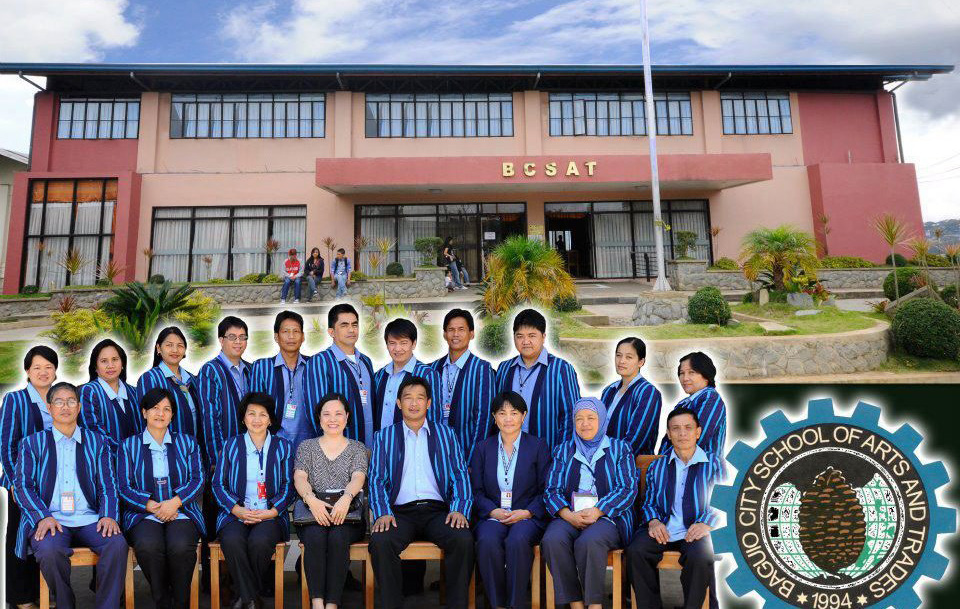
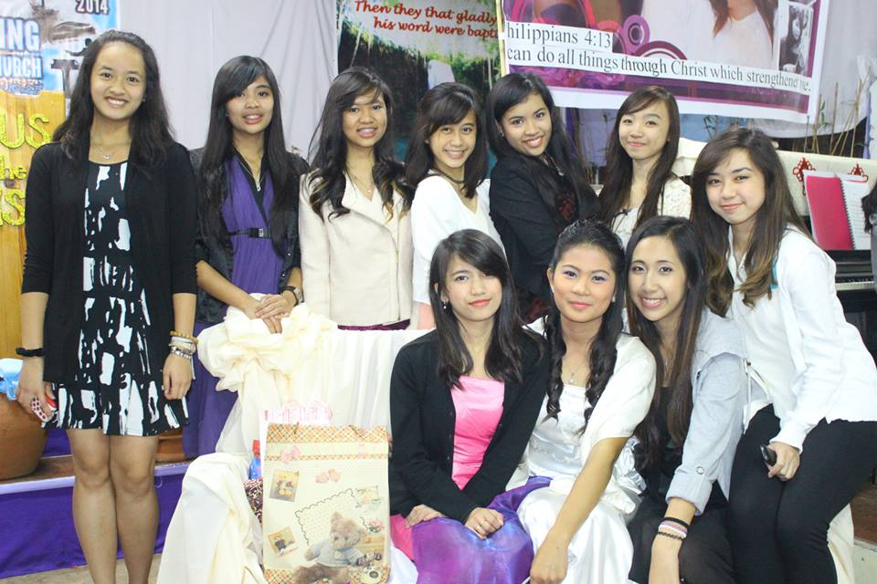
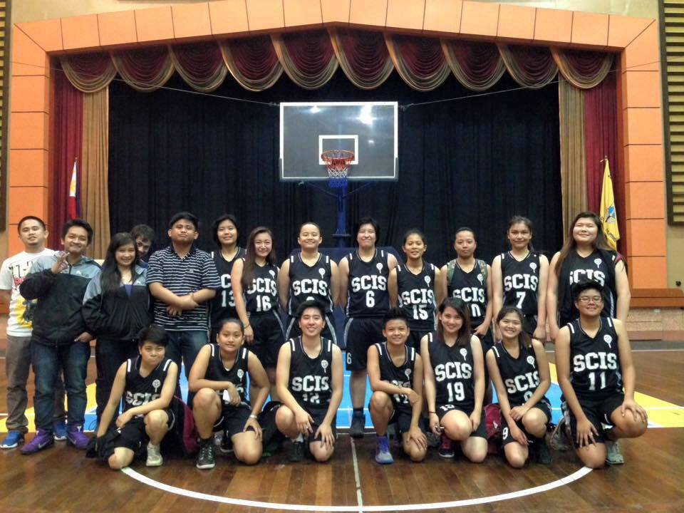

PORTFOLIO
Personal Background
I wonder what the world would be without me. I wonder how my family would appear like without me. I wonder why things happen the way they do. I wonder what, I wonder how, and I wonder why. For the past 19 years of my existence until now, I still can’t find every answer I needed in life. I still can’t unhide all mysteries I wanted to know. I still have what’s and why’s. I believe I never stopped wondering because I know in myself that as long as I live, I will never stop learning. And this is one of the reasons why I live, because I learn. From the moment my mom taught me how to walk, I learned how to walk. I learned how to talk and now I learned how to walk my talk. From the time when my mom taught me how to read and write, I learned to write my name and I learned how to read the name of the food I eat.
I remember when my mom once locked me in an empty room because I did something wrong. I was too angry back then. I was full of anger and hatred that I even wished for the worst. I was too selfish. But now I realize that my mom had a reason, and that is to bring me to where I am now. She taught me to become the person I deserve to be. She brought me into a life I deserve to have. I was like a clay molded into a shape that fits in to this world now because of my mom. I remember when my dad got mad at me because of too much laziness that he turned into a loud noise. Again I felt unloved but now I realize why my parents need to show anger and madness, for them to show the love, for them to make me feel that I am so loved by them that they unleash their covers to reach their limits. That’s how much they care for me. And because of all these things, now I have some answers. Now, I truly understand.
I never wanted to be a princess who lives in a castle together with a mother queen and a father king. I never dreamed to have a home where there are so many nannies serving for me and for everyone who lives with me. All I ever wanted in life is a simple family who loves each other and who would do everything to make the love grow bigger in each and every family member’s heart.
Yes, what I wanted in life is what I have now. I grew up in a christian family composed of 7 members namely Omar Romulus, my father, Dulce Amor, my mother and my siblings, Don Louie, Maria Antonette, King Joshua, Princess Hannah and Gabriele Fae and our advocacy is to win every individual’s heart and soul to be able to become a part of the Christian world where I happily belong. Everyone in the family plays a significant role in the ministries of the church. I myself together with my siblings play instruments while both of my parents volunteer in conducting bible studies and sharing the word of the Lord to people around. I am so glad to have this kind of family. We are all together in strengthening our relationship with each other especially with God.


Skills
In life, I believe that what you love is what you do. You never really excel in doing something if you don’t love what you are supposed to do. In whatever I do, I do it with love. I do it with patience. And I do it with happiness because I always choose to.
I play the violin and I use this talent or skill to share it to other people and most especially to glorify the name of the Lord. I also practice playing the piano just to add up to what I know. Sometimes, I try playing the guitar to add music to my life and make it sound more exciting and interesting. I love music just as other people do because life without music is like a cream puff without the cream inside, it’s boring and tasteless. I also do painting and drawing. In fact, I was able to build a small business of T-shirt printing. I also love baking pastries and cakes because I enjoy every step I go through when making such food. I have so much activities in life that sometimes I tend to do everything at the same time but still I enjoy and I feel happy about it. With this, I thank the Lord so much because I believe that I am one of the blessed.


Education
I spent my primary and secondary years of education in my hometown, Abatan, Buguias, Benguet. I am a graduate of Abatan Elementary School and an alumnus of San Isidro School of Abatan Inc. which is a Catholic school. Fortunately, I graduated with honors which became my edge in being a current DOST scholar in Saint Louis University. I am a major of Information Technology aspiring to become a future programmer and a successful web developer. I am now in the 3rd level of my college years and hoping to be graduating soon. At some point in the middle of my college life, I tried enrolling in Baguio City School of Arts and Trades (BCSAT) which is TESDA accredited for a few months to gain some knowledge and skills in baking pastries which I believe enhanced my inner potentials and capabilities in living a worthy life.
Accomplishments
Only I myself could be able to define what accomplishment for me is. At this point of my life, I can say that I am nearly an accomplished individual. For all the years of my existence, I have so many achievements which I can be proud of, both little and big. I graduated with honors when I was in grade school. I was able to pass the DOST exam and that’s why I was able to help my parents by becoming a scholar of my beloved institution. I once became a part of the dean’s list because of all my efforts and sacrifices. But, not only in school where I made accomplishments, also in my personal life. As I keep on saying, I serve the Lord with all my heart together with my family. And for me, this is the greatest accomplishment I have and will ever have.


Experiences
Even if I know myself that much, of course I still can’t remember every experiences I had from the moment I existed and became a part of this world. They all say, experience is the best teacher so I believe that my learnings are my experiences.
To conquer my fear is what I learned years back then. I was so afraid of anything. I have the tendency to turn small things into big and complicated matter. A single dot becomes a very big spot because I overthink, I over react. I always scare myself because my thoughts and emotions eat me up and turn me down, until I met a friend, who never left me through thick and thin. We became best of friends. And from that moment on, I learned how to live the world full of fun and laughter.
I am the kind of person who goes out with friends and follow them in whatever they do, in wherever they go. I seldom oppose them that’s why I was often a part of the funny unforgettable experiences they had in life. To describe those experiences, just imagine someone drinking Chuckie mixed with ketchup and eating spaghetti pasta using a toothpick. Every experience I had with them is weird but I admit, I enjoy being with them. And I am happy spending some time of my life with the people I used to know.
I am not a typical kind of person who really enjoys adventures. I am satisfied and complete even if I spend summer days and Christmas nights in my hometown. I don’t wish for airplanes and trains and speed boats. I don’t dream for white sand beaches for Instagram feed goals. My experience every year of special occasions means so much to me. Because in my life, as long as I am with the people I love, I enjoy, and I am truly happy.
 